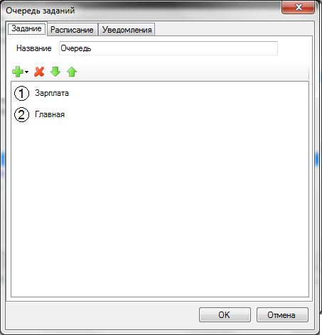

Запуск очереди заданий
Задания данного вида предназначены для запуска уже существующих заданий в определенном порядке. Например, сначала произвести тестирование и восстановление информационной базы, затем ее резервирование.
Чтобы создать очередь заданий необходимо в главном меню программы выбрать Добавить — Очередь заданий. Затем появиться окно, в котором необходимо ввести настройки для задания.
